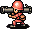
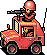
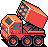
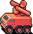
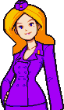
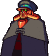

De: La Frikipedia, la enciclopedia extremadamente seria.
De: La Frikipedia, la enciclopedia extremadamente seria. De: La Frikipedia, la enciclopedia extremadamente seria.
«Somos completamente invencibles: tenemos neotanks, cañones super modernos y el triple de tropas y propiedades que nuestros enemigos»
~ Black Hole a punto de ser arrasado, destruido, violado y sodomizado por Orange Star
«Me cago en la puta madre del programador »
~ Tu perdiendo por enesima vez en la primer misión
«He ganado, soy el puto amo»
~ Alguien que no sabia sobre la camapaña dificil
Advance Wars 2 es la secuela evidente del vidriojuego conocido como Advance Wars, el cual se centra de nuevo en las aventuras de nuestros queridos homogays y lesbianurcias capitanes de ejército.

|
Tropa de Marines de Infantería Ligera Altamente Preparados para Misiones: Feroces guerreros hambrientos de sangre, entrenados en todas las artes del combate conocidas y armados con armamento resultado de la inteligencia y el sadismo humanos... capaces del suicidio más descerebrado ante cualquier objeto enemigo con tal de defender la patria... También sirven para okupar kelis abandonadas que nos proveerán de dinero robado para aumentar nuestro cutre ejército. Manejables, con casco, municiones, comida y rifle incluidos, 1000 € (más gastos de envío), disponibles en rojo, azul, amarillo, verde y negro. |
|  | Tropa de Marines Bestias Armados Hasta Los Dientes Con Bazucas: Algunos de los valientes soldados de arriba fueron lo suficente listos como para montar un sindicato y reclamar chalecos de kevlar y lanzapepinos portátiles. Luego se integraron en CC. OO. y se jodió todo. Aunque pudieron salvar sus tubos lanzaconsoladores, cada soldado sólo puede llevar tres consoladores explosivos debido a su carácter resbaladizo (el lubricante) y cuando se les acaban, desearían no haber nacido.Andan corren, saltan, matan, destruyen y conquistan kelis por sólo 3000 €. |
|  | Karts Todoterreno de Reconocimiento y Castigo de Cuatro Ruedas Con Antena: A algún general adicto a Noentiendo se le ocurrió la idea de trasladar los karts asesinos de Super Mario a la vida real, con resultados dudosos debido a que toda la potencia destructora se perdió al sustituir las poderosísimas conchas por cutres ametralladoras M249. Para contrarrestar esto se consiguió que se desplaza a velocidades supersónicas, pero resulta que el césped de más de 3, 096 cm reduce su velocidad en un 94, 263 % |

|
Los Todopoderosos I+D... y la máquina definitiva de guerra es una lata gigante con orugas y un tubo de medio metro (de largo), lo cual es muy triste y nos pone en evidencia a nuestra especie. Con un cáñón y una Vulcan Machinegún, es capaz de barrer cualquier compañía de soldados del mundo, a menos que se encuentre Rambo presente. Puedes encontrarlos en tu concesionario más cercano por sólo 7000 € (un coche cuesta más y no mola tanto, ¡pon un tanque en tu vida!). |

|
Los cañones sobre orugas |

|
Los Transportes Ominosos y Acojonantes o Fregonetas Acorazadas: Imagina... el poder de tracción de un Tyco RadioControl, la velocidad de un nucleares. ¡Y lleva marines dentro! |

|
Los Omnipotentes Tanquémedes: Mentes malignas del Hexágono diseñaron una Fregoneta Acorazada (aka TOA) con un cañón de artillería. El vehículo resultado de esta fusión fue considerado la quintaesencia de los armamentos modernos junto a la Minigun, espada láser. Equivalente a 42 batallones de tanques, sus ametralladoras son absolutamente inútiles contra helicópteros Cobra debido a su incapacidad para inclinarse más de 23, 784º sobre la vertical. Por lo demás son la polla. |

|
Vulcan Machinegún Sobre Orugas: Vulcan Machinegún de dos tubitos sobre un par de orugas. Sencillo y acojonantemente potente. Aniquila helicópteros con la mirada y fulmina batallones enteros de muñecajos. Se usan para disolver disturbios debido a su efectividad contra soldaditos. También hacen un bonito ruido al disparar. |
|  | Lanzacohetes de Feria con Potencia Nuclear: Directamente salidos de la Mercedes, estos mortíferos remolques con un Pirolaunchertm de La Traka armados con petardos de Wolframio y Actimel, pueden devastar países enteros gracias a sus radiogiroscopios que les permiten alcanzar distancias de hasta ElCopón metros, aparte que el wolframio y el Actimel provocan unos petardazos pestiilentes que siembran las tropas rivales de agentes patógenos (nadie dijo que el Actimel fuera BUENO). |
|  | Fregonetas de la CNN Recomvertibles en Lanzamisiles: Básicamente son Fregonetas de la CNN reconvertibles en Lanzamisiles. Dispara a todo lo que vuela, llegando a causar "divertidos efectos" puesto en Automático cerca de un aeropuerto civil. |
Puede que los putos frikis aficionados recuerden las múltiples estrategias que podían ser usadas por los jugadores para conseguir la derrota más escandalosa y descojonante la victoria. A saber:
Bueno, a decir verdad, la táctica vencedora sigue siendo petar todo el espacio posible de unidades y bombardear a los malos con todo lo que haya. Cuando retrocedan, aumentar la ofensiva, seguir matando hasta que llegues a su base y entonces aniquilarlos, matar tropas en un frenesí de de sangre y pólvora, Y DESTRUIR TODAS Y CADA UNA DE SUS UNIDADES, SIN CONCEDER PIEDAD ALGUNA, ¡CASTIGANDO SUS CUERPOS CON ACERO Y METRALLA HASTA BORRAR ESA ESCORIA DE LA FAZ DE LA TIERRAAAAAAAAAA!!! Hasta aquí el apartado estratégico.
(Nota: también puedes capturar el CG enemigo... si estás de bajón o eres homogay)
Los diversos personajes de este jueguecico han aumentado debido a que Noentiendo ha puesto a su disposición más lubricante dinero para que puedan hacer fichajes de última generación para este nuevo cutrejuego.
| Afotaco del personaje | Descripción | Punto(s) Fuerte(s) | Debilidad(es) | Mola | Odia | Poder de OJ | SuperPoder OJ |
| Andy |
Sigue siendo el mismo cabrón que en el primer Advance Wars. Solo lo puedes coger en la tutorial y en alguna misión que otra. | Ninguno, aunque mejor que no le des la espalda. | Ninguna. | El, ejem, aceite del coche. Aunque últimamente se le ha visto prefiriendo el aceite de los Tanques. | Tíos estrechos de parietales. | Mega Porculación: Encula a todas tus unidades y recuperan 2 puntos de Vida. | Porculación gozosa Lo mismo de antes, pero al lubricar la zona les da gusto y recuperan 5 de vida. |
 Max |
El mismo que en el primero, solo que esta vez lo manejamos menos ocasiones porque |
Ataque directo. | Ataque indirecto. | Ejercicio y deportes. | Estudiar (¿para que sirve en un mundo en que la guerra es como el furgol?). | Maxfuerza: Lanza un misil sobre tus propias unidades de ataque directo cargado de esteroides y las dopa, convirtiéndolas en más burracas de lo que ya son de por sí. | Onda Expansiva: Lo mismo de antes, pero con esteroides de mala calidad, lo cual las cabrea aún más. |
 Sami |
En este juego al parecer ha dejado su terrible vicio por la homosexualidad para pasarse a las drogas. | Infantería. | Unidades terrestres. | El chocolate (sí, por algo se empieza) | Heterosexuales. | Desfile del orgullo gay: Un desfile del orgullo gay el cual fortalece la moral de tus tropas (no, si ya decía yo que en la marina no hay nada más que homosexuales). | Carroza de Chueca: Esta vez el desfile montado aumenta la moral de tus tropas hasta un grado casi de invencibilidad, haciendo que sean capaces de saquear, destruir y violar a todos los hombres de una ciudad en un solo día. |
|  Nell |
Sí, esta vuelve a aparecer. Aquí se sabe por fin que la tipa solo era una becaria al estilo Lewinsky | Ninguno. | Ninguna. | Calentar pollas. | Tíos tímidos. | Epic Potranca!!!11ONEONEELEVEN: Convoca al Poder de Cristo para que su ejército tenga una potra épica, pudiendo reventar unidades enteras de Tanques Medianos con Infantería con 3 HP e incluso menos. | Potra Letal: Lo mismo de antes, pero aumenta su potra hasta tal punto que es capaz de ganar la bono-loto sin ni siquiera comprar el boleto. |
| Hachi |
Un viejo viejuno que solo se puede pillar en el modo versus. Se sospecha que antes era capo de la mafia y se dedicaba a la trata de blancas, droga y consoladores | Tiene "contactos" y puede desplegar unidades a menor coste | Ninguna. | Beneficios | Que le salga mal el contrabando | Trueque: El tipo le dice a la mafia que cambie a las hijas de los empresarios que tenían secuestradas por un "trato de favor", con lo que puede desplegar tropas al 50% del coste original | Sindicato: Sus sindicatos mafiosos toman las ciudades y le dicen a la gente que o hacen tropas en las ciudades, o se olvidan del costo. |
| Afotaco del personaje | Descripción | Punto(s) Fuerte(s) | Debilidad(es) | Mola | Odia | Poder de OJ | SuperPoder OJ |
 Olaf |
Papa Noel vuelve a la carga, esta vez más cabreado que antes dado que los de Black Hole le jodieron su querido poblado de elfos ninfómanos. | Nieve. | Lluvia. | Frío. | Calor. | Ventisca: Hace que nieve pegando un berrío en un lugar propenso a avalanchas. | Castigo Invernal: El tipo pega un berrido más fuerte y los enemigos se asustan, con lo que pierden dos de vida. |
 Grit |
En este juego Grit demuestra ser un imbécil de remate, el cual goza de tener a Papa Noel cabreado para que le corra a collejas y que de ejemplo a Colin | Ataque indirecto. | Ataque directo. | Gatos (se ve que es zoófilo). | Ratas. | Emboscada: Les mete un guindilla picante por el ano a todas sus unidades de ataque indirecto, que hace que los proyectiles lleguen más lejos y sean más potentes. | Camuflaje: El tipo pone pegatinas de rosas a sus unidades, lo cual las motiva y hace que los ataques indirectos lleguen más lejos y peten más fuerte. |
| Colin |
Un niño pijo de Blue Moon el cual quería irse a armar bulla con sus colegas y demostrar que los pijos no son tan inútiles | Al ser pijo, tiene más pasta para hacer soldaditos | Sus tropas son pijas y son más ahostiables | Olaf y Grit (se deja encular) | Black Hole | Fiebre del oro: El tipo saca un cheque a nombre de sus papi y te sube la pasta | Poder del dinero: Le dice a sus soldados que tiene mucha pasta y que si ganan se podrán comprar algo bonito, con lo que se vuelven más fuertes. |
| Afotaco del personaje | Descripción | Punto(s) Fuerte(s) | Debilidad(es) | Mola | Odia | Poder de OJ | SuperPoder OJ |
 Kanbei |
El fanático comunista vuelve para dar la vara con su doctrina sobre el ahorro a los de Black Hole que quieren introducir la propiedad privada en su país | Todas las unidades son más potentes. | Alto costo de unidades. | Orgías en áticos de lujosos rascacielos con hermosas mujeres que antes eran hombres. | El código Bushido (está hasta los cojones de él). | Fuerza Moral: Da un mítin a lo Ánsar, tras lo cual todas sus unidades sufren enajenación mental, y se hacen más fuertes y temerarias. | Espíritu samurai: El tipo coge una Soulstone y la parte entre todos sus soldados, con lo que estos se transforman como Shonkaku Hakufu en unas máquinas de romper |
 Sonja |
La hijita de Kanbei sigue siendo una chula de aúpa aunque en AW le hayamos descacharrado a todo el ejército con medio soldado. Esta vez la chavala se pone a lidiar con los memos de Black Hole diciendo que es mejor. | Visión mejorada. | Mala suerte. | Bondage y S&M. | n00bs. | Visión Mejorada: Pone webcams ocultas en la casa del enemigo, esperando a que haga alguna guarrada. Con esto aumenta nuestro rango de visión. | Contraataque: Tus unidades de reconocimiento atacan antes que el enemigo debido a que ha pinchado los Walkie-Talkie de los enemigos y sabe por donde nes vienen los tiros. |
| Sensei |
Un viejo que no se quita su traje de aviador del siglo pasado porque cree que cuando se caiga el mundo el se salvará con su paracaídas de papel de periódico | Infantería y helicópteros más potentes | Barcos y vehículos débiles | Caída libre | Los sitios estrechos | Operación aérea: Coge a cuatro pelagatos, los sube a los helicópteros y los hace más potentes porque tienen más pavos que disparan. Además, en las ciudades aparecen unidades de infantería porque no podían hacerse la paja a gusto. | Asalto aéreo: Lo mismo de antes, pero esta vez son cinco pelagatos. Además, en las ciudades aparecen unidades mecanizadas por lo mismo de antes |
| Afotaco del personaje | Descripción | Punto(s) Fuerte(s) | Debilidad(es) | Mola | Odia | Poder de OJ | SuperPoder OJ |
 Águila |
Este dominguero sigue dando la vara con sus avioncitos de papel. Los de Black Hole se la traen floja y él no los tiene muy en cuenta. | Unidades aéreas potentes. | Unidades navales débiles. | Gafas de la suerte. | Bañarse. | Asalto Relámpago: Endroga a todas sus tropas, y eso les permite atacar una segunda vez en el mismo turno. | Ataque Relámpago: El tipo da Speed del bueno a sus tropas, lo cual las pone eufóricas y además de atacar dos veces, son más potentes. |
 Drake |
Intentó hacer dieta, pero debido a eso cogió una depresión y ha engordado aún más. Odia a los de Black Hole porque no ponen Ketchup en las hamburguesas. | Unidades Navales. | Unidades Aéreas. | Bucear y el McDonald´s. | [Avionetas. | Tsunami: Aumenta una mieja (para los de la ESO: un poco) el ataque de sus unidades navales y hace que llueva sobornando al hombre del tiempo. | Tifón: Lo mismo de antes, pero en versión "Fin del mundo" que quita dos de vida a los enemigos y les agua la mitad del combustible. |
| Jess |
Una tipa aficionada a las carreras de coches, en sus ratos libres le gusta jugar a los coches de choque con sus tanques. | Vehículos potentes | Unidades de infantería, aéreas y navales débiles | Los Camioneros | Los Metrosexuales | TurboLes da gasofa de contrabando a los tanques y estos meten a toda caña, con lo que pueden atropellar a las unidades enemigas. | Superturbo: Le mete la misma gasofa mezclada con speed y cocaína a los tanques para que se monten unas carreritas y de paso atropellen a los enemigos. |
| Afotaco del personaje | Descripción | Punto(s) Fuerte(s) | Debilidad(es) | Mola | Odia | Poder de OJ | SuperPoder OJ |
|  Sturm |
Vuelve, como dicen las pelis de su cuñado, esta vez con toda su compañía de monstruos. | Poder defensivo y ofensivo mayor. | Nieve. | ☠ | ☠ | No lo utiliza el muy... | Meteoroataque: Invoca a un meteorito del espacio exterior que pega un pepinazo impresionante contra las tropas henemijas. |
| Helmut |
No es nada más que una mala copia de Max, pero este es más agresivo que una piraña debido al Speed de mala calidad que se chuta. | Sus unidades petan fuerte a veces | Es un puto chapucero | La carne | Los vegetarianos | Fuerza bruta: Le mete hormonas de Gorila a sus unidades y se ponen tó berracas | Golpe Bárbaro: Les mete hormonas de King Kong a sus tipos y se ponen más berracos que antes. |
| Kat |
Una críaja de mierda que se hace la chula al igual que Sonja, pero esta parece una abuela del siglo pasado con ese cacho peinado que lleva, se piensa que es la hermana perdida de Bellatrix Lestrange (luego de que su madre intentara abortarle). | Se beneficia del terreno para |
Ninguna | Ganar | Perder | Táctica de campo: Sus unidades montan un Picnic y de la comilona que se dan, su coste de movimiento es uno. | Táctica Superior: Pone Cocaína en los sandwiches de sus unidades y del mono que cogen aumenta su ataque. |
| Adder |
Así es, amigos, Marilyn Manson violó una Serpiente y este fue el resultado. Un puto emo de mierda que no tenía mejor cosa que hacer que meterse en el ejército. | Puede utilizar su poder OJ antes. | Ninguna | La cuchillas de afeitar | Los canis | Deslizamiento: Pone aceite en el suelo para que sus unidades |
Viento Colateral: Les pone una vela a sus tipos |
| Maverick |
Este es el único que parece normal en todo el circo de monstruos de Black Hole. | Poder defensivo un poco mayor | Como es lento, le cuesta utilizar su poder OJ | Los obuses | Las ametralladoras | Viento negro: Coge un ventilador que lanza aire del espacio contra el campo de batalla, al cual tus unidades les gusta y se curan y a las enemigas les quita un punto de vida | Tormenta Negra: Lo mismo de antes, pero ahora además lanza hagua del váter y quita más vida a los enemigos y a recupera más a tus unidades. |
Autor(es):